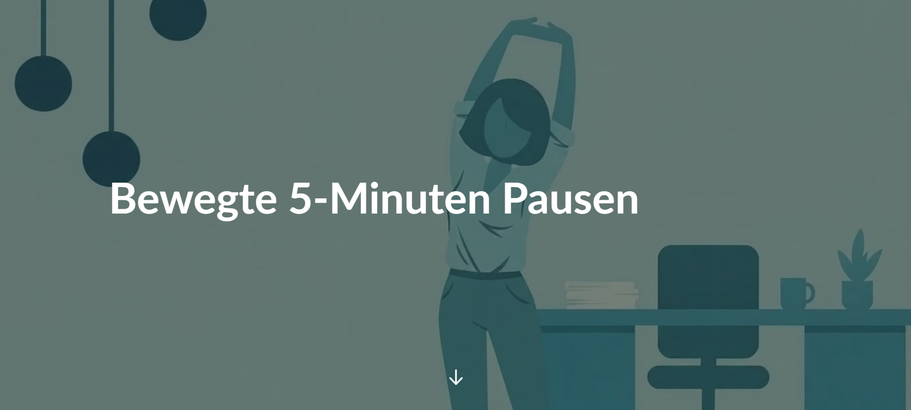
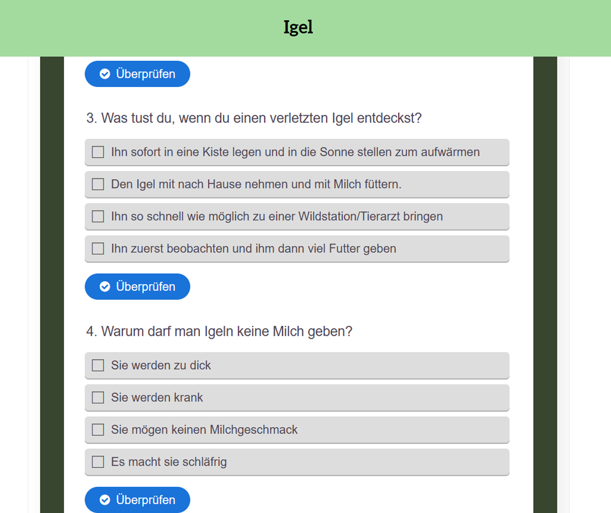

KI im Büro (Articulate Storyline)

Details & Konzeption anzeigen
Szenariobasiertes E-Learning für Büroangestellte. Vermittelt praxisnahe Regeln für den sicheren Umgang mit KI-Tools im Arbeitsalltag anhand von Fallbeispielen und Wissenschecks.
- Zielgruppe & Dauer: Büroangestellte · ca. 15 Min.
- Schwerpunkte: Sichere Datenauswahl (Datenschutz), strukturierter Prompt-Aufbau und Praxis-Quiz.
Microlearning: Bewegte Pause (Articulate Rise)

Details & Konzeption anzeigen
Kompakte, mobilfreundliche Lerneinheit für mehr Ergonomie und Aktivität am Bildschirmarbeitsplatz mit alltagstauglichen Übungen.
- Zielgruppe & Dauer: Bildschirmarbeitende · ca. 5 Min.
- Schwerpunkte: Direkte Mitmach-Übungen.
E-Learning: Igel im Garten (Zebis digital)

Details & Konzeption anzeigen
Altersgerechte, digitale Lernumgebung für die 3. Primarklasse. Fördert selbstständiges Entdecken durch spielerische Gamification-Elemente und Audioelementen.
- Zielgruppe: 3. Primarklasse (Volksschule)
- Schwerpunkte: Gamification, Hörverstehen, Multiple-Choice und spielerisches Entdecken.
